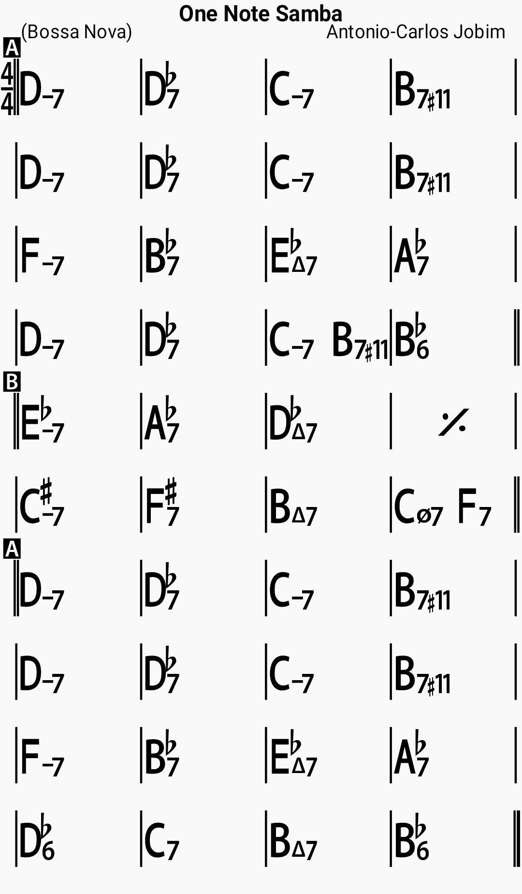

Chords

Lyrics
This is just a little samba Built upon a single note Other notes are bound to follow But the root is still that note Now this new one is the consequence Of the one we've just been through As I'm bound to be the unavoidable Consequence of you There's so many people who can Talk and talk and talk And just say nothing Or nearly nothing I have used up all the scale I know And at the end I've come to nothing Or nearly nothing So I came back to my first note As I must come back to you I will pour into that one note All the love I feel for you Anyone who wants the whole show Re mi fa sol la si do He will find himself with no show Better play the note you know